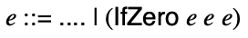
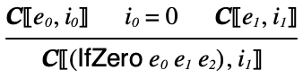

6 Con: branching with conditionals
When you come to a fork in the road, take it.
6.1 Conditional execution
Let’s now consider adding a notion of conditionals to our target language.
We’ll call it Con.
We will use the following concrete syntax: (if (zero? e0) e1 e2).
This leads to the following grammar for concrete Con:

And abstract grammar:

Which can be modeled with the following definitions:
#lang racket (provide Int Prim1 IfZero) ;; type Expr = ;; | (Int Integer) ;; | (Prim1 Op Expr) ;; | (IfZero Expr Expr Expr) ;; type Op = 'add1 | 'sub1 (struct Int (i) #:prefab) (struct Prim1 (p e) #:prefab) (struct IfZero (e1 e2 e3) #:prefab)
The parser is similar to what we’ve seen before:
#lang racket (provide parse) (require "ast.rkt") ;; S-Expr -> Expr (define (parse s) (match s [(? integer?) (Int s)] [(list (? op1? o) e) (Prim1 o (parse e))] [(list 'if (list 'zero? e1) e2 e3) (IfZero (parse e1) (parse e2) (parse e3))] [_ (error "Parse error")])) ;; Any -> Boolean (define (op1? x) (memq x '(add1 sub1)))
6.2 Meaning of Con programs
The meaning of Con programs depends on the form of the expression and the new form is an if-expression.
the meaning of a if expression (IfZero e0 e1 e2) is the meaning of e1 if the meaning of e0 is 0 and is the meaning of e2 otherwise.
Let’s consider some examples (using concrete notation):
The semantics is inductively defined as before. There are two new rules added for handling if-expressions: one for when the test expression means 0 and one for when it doesn’t.


The interpreter has an added case for if-expressions, which recursively evaluates the test expression and branches based on its value.
#lang racket (provide interp) (require "ast.rkt" "interp-prim.rkt") ;; Expr -> Integer (define (interp e) (match e [(Int i) i] [(Prim1 p e) (interp-prim1 p (interp e))] [(IfZero e1 e2 e3) (if (zero? (interp e1)) (interp e2) (interp e3))]))
We’ve also made one trivial change, which is to move interp-prim1 to its own module. This will be useful in the future when more primitive operations are added, we won’t have to clutter up the interpreter:
#lang racket (provide interp-prim1) ;; Op Integer -> Integer (define (interp-prim1 op i) (match op ['add1 (add1 i)] ['sub1 (sub1 i)]))
We can confirm the interpreter computes the right result for the examples given earlier (using parse to state the examples with concrete notation):
Examples
> (interp (parse '(if (zero? 0) (add1 2) 4))) 3
> (interp (parse '(if (zero? 1) (add1 2) 4))) 4
> (interp (parse '(if (zero? (if (zero? (sub1 1)) 1 0)) (add1 2) 4))) 4
> (interp (parse '(if (zero? (add1 0)) (add1 2) (if (zero? (sub1 1)) 1 0)))) 1
The argument for the correctness of the interpreter follows the same structure as for Blackmail, but with an added case for if-expressions.
6.3 An Example of Con compilation
Suppose we want to compile (if (zero? 8) 2 3)...
We already know how to compile the 8, 2, and 3 part.
What needs to happen?
Execute the code for 8 leaving the result in 'rax,
check whether 'rax holds zero,
if it does, execute the code for 2,
if it doesn’t, execute the code for 3.
We can determine whether 8 evaluates to 0 using a comparison instruction: (Cmp rax 0). To do the conditional execution, we will need to jump to different parts of the code to either execute the code for 2 or 3. There are several ways we could accomplish this, but we take the following approach: immediately after the comparison, do a conditional jump to the code for the then branch when zero. Should the jump not occur, the next instructions will carry out the evaluation of the else branch, then (unconditionally) jump over the then branch code.
To accomplish this, we will need two new labels: one for the then branch code and one for the end of the then branch code. The gensym function can be used to generate symbols that have not appeared before.
In total, the code for this example would look like:
(let ((l0 (gensym)) (l1 (gensym))) (list (Mov 'rax 8) (Cmp 'rax 0) (Je l0) (Mov 'rax 3) (Jmp l1) (Label l0) (Mov rax 2) (Label l1)))
6.4 A Compiler for Con
Notice that the (Mov 'rax 8), (Mov rax 3) and (Mov rax 2) parts are just the instructions generated by compiling 8, 2 and 3. Generalizing from this, we arrive at the following code for the compiler:
(let ((l0 (gensym 'if)) (l1 (gensym 'if))) (append (compile-e e1) (list (Cmp 'rax 0) (Je l0)) (compile-e e3) (list (Jmp l1) (Label l0)) (compile-e e2) (list (Label l1))))
This will require extending our use of a86 instructions; in particular, we add Jmp, Je, and Cmp instructions.
The complete compiler code is:
#lang racket (provide (all-defined-out)) (require "ast.rkt" a86/ast "compile-prim.rkt") ;; Expr -> Asm (define (compile e) (prog (Global 'entry) (Label 'entry) (compile-e e) (Ret))) ;; Expr -> Asm (define (compile-e e) (match e [(Int i) (compile-integer i)] [(Prim1 p e) (compile-prim1 p (compile-e e))] [(IfZero e1 e2 e3) (compile-ifzero e1 e2 e3)])) ;; Integer -> Asm (define (compile-integer i) (seq (Mov 'rax i))) ;; Expr Expr Expr -> Asm (define (compile-ifzero e1 e2 e3) (let ((l1 (gensym 'if)) (l2 (gensym 'if))) (seq (compile-e e1) (Cmp 'rax 0) (Je l1) (compile-e e3) (Jmp l2) (Label l1) (compile-e e2) (Label l2))))
Mirroring the change we made to the interpreter, we separate out a module for compiling primitives:
#lang racket (provide compile-prim1) (require "types.rkt" a86/ast) ;; Op Asm -> Asm (define (compile-prim1 p c) (seq c (match p ['add1 (Add 'rax (value->bits 1))] ['sub1 (Sub 'rax (value->bits 1))])))
Examples
> (define (show s) (compile-e (parse s))) > (show '(if (zero? 8) 2 3))
(list
(Mov 'rax 8)
(Cmp 'rax 0)
(Je 'if83641)
(Mov 'rax 3)
(Jmp 'if83642)
(Label 'if83641)
(Mov 'rax 2)
(Label 'if83642))
> (show '(if (zero? 0) 1 2))
(list
(Mov 'rax 0)
(Cmp 'rax 0)
(Je 'if83643)
(Mov 'rax 2)
(Jmp 'if83644)
(Label 'if83643)
(Mov 'rax 1)
(Label 'if83644))
> (show '(if (zero? 0) (if (zero? 0) 8 9) 2))
(list
(Mov 'rax 0)
(Cmp 'rax 0)
(Je 'if83645)
(Mov 'rax 2)
(Jmp 'if83646)
(Label 'if83645)
(Mov 'rax 0)
(Cmp 'rax 0)
(Je 'if83647)
(Mov 'rax 9)
(Jmp 'if83648)
(Label 'if83647)
(Mov 'rax 8)
(Label 'if83648)
(Label 'if83646))
> (show '(if (zero? (if (zero? 2) 1 0)) 4 5))
(list
(Mov 'rax 2)
(Cmp 'rax 0)
(Je 'if83651)
(Mov 'rax 0)
(Jmp 'if83652)
(Label 'if83651)
(Mov 'rax 1)
(Label 'if83652)
(Cmp 'rax 0)
(Je 'if83649)
(Mov 'rax 5)
(Jmp 'if83650)
(Label 'if83649)
(Mov 'rax 4)
(Label 'if83650))
Examples
> (define (tell s) (asm-interp (compile (parse s)))) > (tell '(if (zero? 8) 2 3)) 3
> (tell '(if (zero? 0) 1 2)) 1
> (tell '(if (zero? 0) (if (zero? 0) 8 9) 2)) 8
> (tell '(if (zero? (if (zero? 2) 1 0)) 4 5)) 4
6.5 Correctness and random testing
The statement of correctness follows the same outline as before:
Compiler Correctness: For all expressions e and
integers i, if (e,i) in  ,
then (asm-interp (compile e)) equals i.
,
then (asm-interp (compile e)) equals i.
Again, we formulate correctness as a property that can be tested:
Examples
> (define (check-compiler e) (check-equal? (asm-interp (compile e)) (interp e) e))
Generating random Con programs is essentially the same as Blackmail programs, and are provided in a random.rkt module.
Examples
> (require "random.rkt") > (random-expr) '#s(Prim1 add1 #s(Prim1 add1 #s(Int -1)))
> (random-expr) '#s(Int -3)
> (random-expr) '#s(Int -3)
> (random-expr)
'#s(Prim1
sub1
#s(Prim1
sub1
#s(Prim1 add1 #s(Prim1 add1 #s(Int 5)))))
> (for ([i (in-range 10)]) (check-compiler (random-expr)))